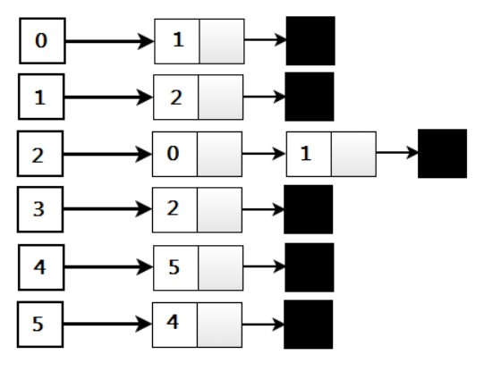
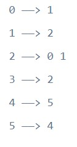

Implementación de grafos en C++ usando STL
Dado un gráfico no dirigido o dirigido, implemente una estructura de datos de gráfico en C++ usando STL. Implemente para graphs ponderados y no ponderados utilizando la representación de lista de adyacencia del gráfico.
Terminología y Representaciones de Graphs
Como ya sabemos, la lista de adyacencia asocia cada vértice del grafo con la colección de sus vértices o aristas vecinos, es decir, cada vértice almacena una lista de vértices adyacentes. Hay muchas variaciones de la representación de la lista de adyacencia dependiendo de la implementación.

Por ejemplo, a continuación se muestra la representación de la lista de adyacencia del graph anterior:

La representación anterior permite el almacenamiento de datos adicionales en los vértices, pero es muy eficiente en la práctica cuando el graph contiene solo unas pocas aristas. Usaremos la clase de vector STL para implementar la representación de lista de adyacencia de un graph.
Implementación de graph dirigidos usando STL


Resultado:
